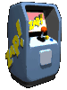

ROBLOX★彡 РАЗБЛОКИРОВАЛИ В РОССИИ! 彡★
Roblox снова работает в России с 10 июня 2026 без VPN — а если не открывается или лагает, чиним за 1 минуту  
10 июня 2026 года Роскомнадзор снял блокировку Roblox в России! Игра была заблокирована 3 декабря 2025 года, но после того, как компания выполнила требования по защите детей (и после десятков тысяч жалоб от самих детей), доступ вернули. Теперь Roblox снова работает без VPN — можно играть как раньше. 
Бывает, что после разблокировки Roblox всё ещё не грузится или лагает. Причины:
Самый надёжный способ зайти в Roblox при любых ограничениях — VPN на VLESS Reality. Он маскирует трафик, обходит DPI и глушилки, и Roblox открывается даже при шатдауне. Промокод VNESPISKA = −20% ★ настройка — в гайдах 

Roblox в России в 2026 году: что случилосьRoblox разблокировали в России 10 июня 2026 года. Платформу заблокировали 3 декабря 2025 года по обвинению в распространении «экстремистских материалов» и «ЛГБТ-пропаганды». Roblox — одна из самых популярных игр среди детей и подростков (около 100 млн игроков в день в мире, и она была самой скачиваемой мобильной игрой в России). После выполнения требований по детской безопасности и волны жалоб от детей доступ вернули. Как зайти в Roblox, если не открываетсяЕсли Roblox не работает даже после разблокировки — смени DNS, перезапусти устройство и роутер, или подключи VPN. При ограничении мобильного интернета на МТС, МегаФон, Tele2, Билайн, Yota поможет VPN на VLESS Reality. Нужен ли VPN для Roblox сейчасПосле 10 июня 2026 VPN не обязателен, но полезен как страховка: блокировки в РФ возвращаются, а при шатдаунах без VPN не зайти. Получи VPN в @vnespiskabot и играй без перебоев. 
|